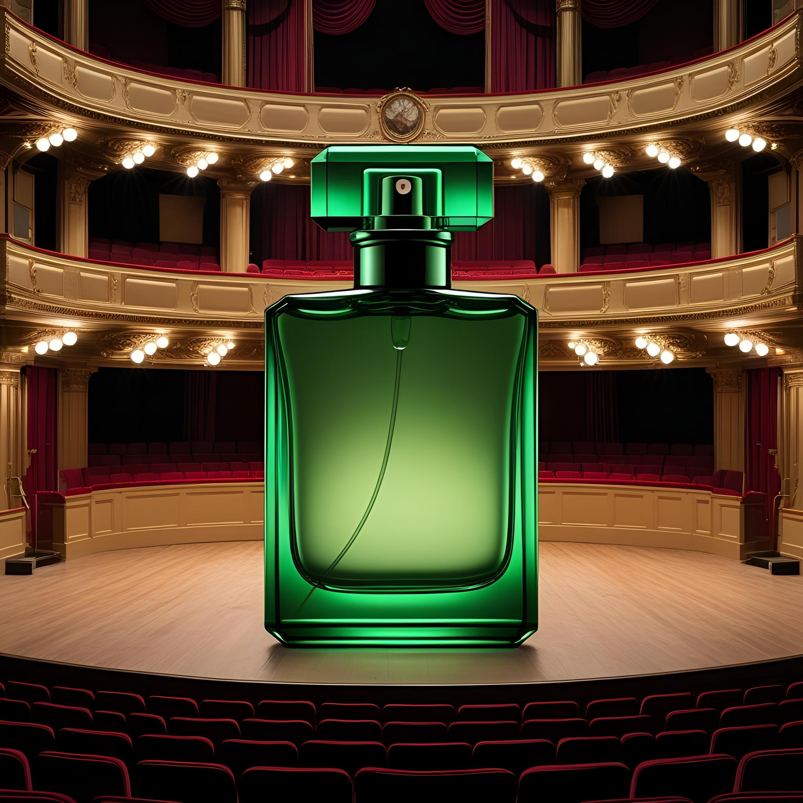

Brand DNA
OccultFolkloreLiteratureHistory
Small-batch fragrance house founded by Claire Baxter, positioned around dark, memorable scent narratives.
Sixteen92: Executive Brand Dashboard | Janelle Gardner
Sixteen92 blends dark folklore, history, literature, and avant-garde fragrance into a niche beauty experience- now mapped as an insight-first dashboard.
Small-batch fragrance house founded by Claire Baxter, positioned around dark, memorable scent narratives.
Oil formats range from 2–6 ml; parfum formats include travel spray through 30 ml.
Revamping beeswax absolute scents shows responsiveness to consumer values and animal-derived ingredient concerns.
Design & Prejudice
Opportunity

Premium Rush
Limited delivery speeds and email-based holiday requests add friction when speed and clarity drive customer confidence.
The Theory of Everything
Ravula’s study connects parcel timeliness with online review ratings: early arrivals tend to lift ratings, while late deliveries lower ratings and can amplify negative word-of-mouth.
Recommendations
Create musical and theater-inspired scents tied to literature and history.
Introduce distinct shapes and symbolic ads to trigger visual-emotional interest.
Add standard, 2nd business day, 3rd business day, and holiday filters.
Add homepage scent reviews and dedicate support to social feedback.